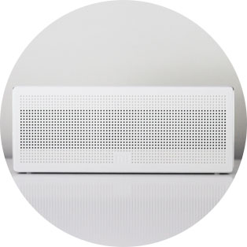
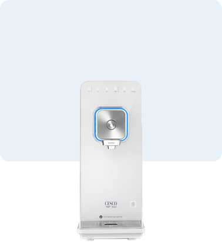
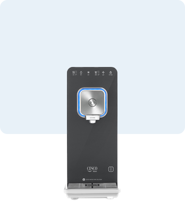

home > 서비스경영 > 세스코 서비스
세스코 서비스
다양한 장소에 자리잡고 있는 세스코 서비스
비래해충
- 1년 내내, 41년 노하우를 경험할 수 있습니다.
- 파리, 나방, 모기 등의 날아다니는 비래해충을 24시간 동안 제어하여,
깨끗하고 위생적인 공간을 약속드립니다.
-
- 세스코 전용 램프
- 세스코 IPM 기술연구소의 다양한 실험을 통해 개발한 세스코 전용 램프를 사용하여 강력한 포획력을 자랑합니다
-

- 세스코 카트리지
- 자적 기술로 제작된 카트리지는 우수한 접착력과 내구성으로 뛰어난 해충 포획력을 지니고 있습니다
-
- 세스코 안정기
- 해충특성을 과학적으로 분석하여 개발한 안정기를 사용하여 비래해충을 가장 잘 유인합니다
- CESCO FIC
System 장비들이 다른 이유 - 같은 개체 수의 비래해충을 방사하여 포획 시간을 측정하는 반감기 테스트에서 세스코의 장비는 타사 장비보다 4배나 빠른 시간 내에 포획하는 결과를 보였습니다. 또한 세스코만의 독자적 기술력을 바탕으로 설계된 장비들은 포획력 면에서 최고를 자랑합니다.
- 접착력
- 100%
- 포획력
- 100%
- 내구성
- 100%
- 비래해충 서비스
- 전문가 관리와 첨단 시스템 케어 맞춤구성 비래해충 서비스는
첨단기기가 3단계 디펜스 라인을 구축하여 비래해충의 실내유입을 차단합니다.
실내포충등피닉스PHOENIX
- 규격
- 855(W) x 695(H) x 185(D) mm
- 총 중량
- 20 kg 이내(설치용 부속물 제외 시)
- 사용전원
- AC 220V(보조전원 : 3.7V, 충전식 전지)
향균·공기
- 오염 발생 구역은
예방으로 관리 할 수 있습니다. - 호흡기와 손을 통해 감염되는 바이러스·박테리아 질환을 효과적으로 예방할 수 있는 안심 솔루션으로서 탈취, 유해세균 및 바이러스 제거로 쾌적한 환경을 지켜드립니다.
-
- 강력한 항균력
- 서식하는 유해세균 99%
이상의 살균력
-
- 뛰어난 안전성
- 환경유해물질 등으로
부터 안전성 확인
-
- 고성능 디스펜서
- 에어제닉 분사량 9단계
조절 가능
-
- 우수한 디자인
- 2012년 지식경제부
굿디자인 선정
- 향균·공기 안전 전문가와
세스코 과학으로 관리합니다. - 신종플루, 사스, 악성 독감 등 일시적 소독으로는 방제가 힘든 치명적인 세균들이기에 불특정 다수를 상대하는 영업장과 건물에서는 과학적이고, 체계적인 방법이 필요합니다. 세스코는 업종별, 위험장소별로 진단하여 맞춤 프로그램을 제공합니다
수질안심
- Why CESCO Water?
- 세스코만의 과학을 더욱 안전하고, 안심할 수 있는
물을 제공하는 것이 세스코 워터 안심관리 서비스의 시작 이유입니다.
-
- 01
- 꼭 필요하고 편리한
기능으로 생활의 가치 향상
-
- 02
- 유입부터 출수까지
세스코 과학 수질관리
-
- 03
- 차별화된 솔루션으로
안전한 물을 만드는 기술
-
- 04
- 세련된 디자인으로
다양한 장소에 설치 가능
- 매일 먹고 마시는 물,
과학적인 세스코 워터로 시작 - 매일 숨쉬고, 먹고, 마시는 환경 위생을 살피고 있는 세스코가 더욱 믿고 안심할 수 있는 세상을 만들기 위해 먹는물 뿐만 아니라 조리하는 물까지도 안전한 물을 공급하겠다는 사명감으로 수질 안심 관리 솔루션을 만들어 갑니다.
- 수질안심 서비스
- 라이프 스타일에 맞게 다양하고 세련된 컬러를 선택해 보세요.
-

- 퓨어 화이트Pure White is Simple
- #Simple 소박한
- #Honest 솔직한
- #Pure 순수한
-
- 메탈릭 실버Metalic Silver is Smart
- #Simple 영리한
- #Confident 자신감 있는
- #Firm 확고한
-

- 차콜 그레이Charcoal Gray is Classic
- #Classic 최고 수준의
- #Luxurious 고급스러운
- #Grand 당당한
-
- 인디고 블루Indigo Blue is Urban
- #Urban 도시적인
- #Successful 성공적인
- #Reliable 믿을만한
-
- 크림 아이보리Cream Ivory is Friendly
- #Friendly 친절한
- #Harmonious 조화로운
- #Thoughtful 배려심 있는
-
- 세이지 그린Sage Green is Calm
- #Calm 차분한
- #Sophisticated 세련된
- #Comfortable 편안한
-
- 아쿠아 민트Aqua Mint is Trendy
- #Trendy 최신 유행의
- #Positive 긍정적인
- #Sensible 센스있는
-

- 베이비 핑크Baby Pink is Lovely
- #Lovely 사랑스러운
- #Pretty 매력적인
- #Vibrant 활기찬